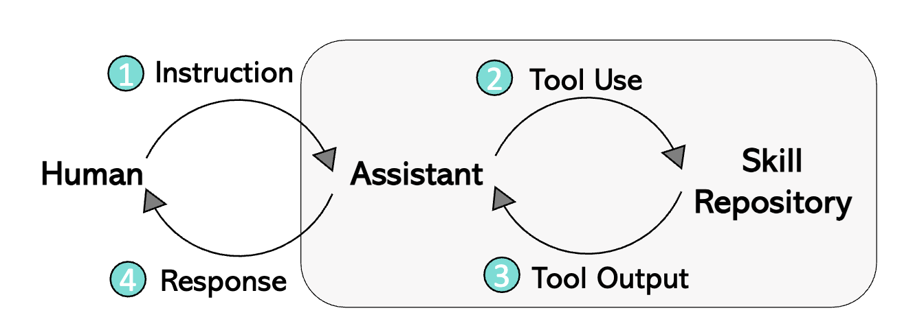

🌋 LLaVA-Plus Human-AI Interaction Process

LLaVA-Plus enables tool use with four steps.
- ① Humans provide a task instruction \(X_{{q}}\) related to an image \(I_{{q}}\).
- ② The LMM-powered assistant analyzes both \(X_{{q}}\) and \(I_{{q}}\), and outputs \(X_{{skill\_use}}\) that chooses the tool from skill repository and writes the appropriate prompt as the tool argument.
- ③ By executing the tool, the result \(X_{{skill\_result}}\) is returned to the assistant.
- ④ The assistant aggregates \(X_{{skill\_result}}\) with \(X_{{q}}\) and \(I_{{q}}\), and outputs \(X_{{anwser}}\) to humans.
- Humans: \(I_q\)<\n> \(X_{{q}}\) < STOP> Assistant: \(X_{{skill\_use}}\)
- Humans: \(X_{{skill\_result}}\)< STOP> Assistant: \(X_{{anwser}}\)